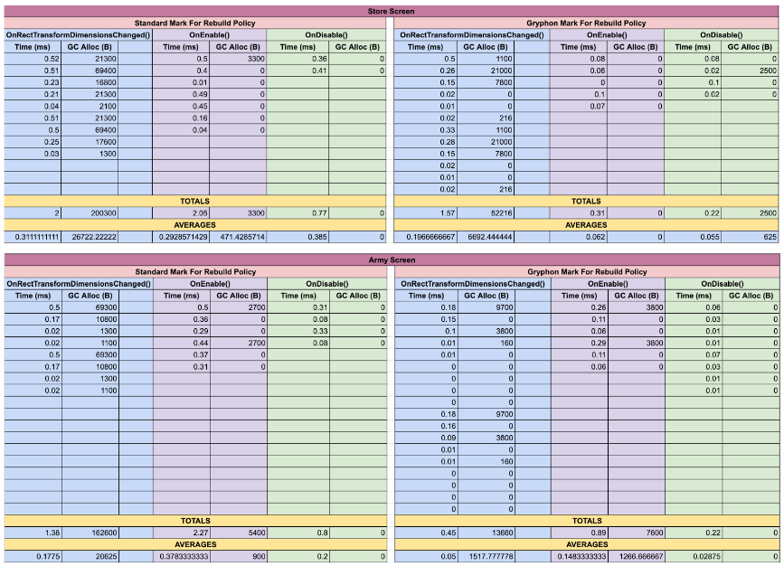

Role
Software Engineer
Skills
Solution Design
Unity
C#
Strategies
Dependency Injection
Strategy Pattern
Summary
Unity UI contains a set of UI components that automatically organize UI elements in a screen. These components are called Layout Groups. Unity Layout Groups are broken down into 3 separate components: Grid Layout Groups, Horizontal Layout Groups, and Vertical Layout Groups. This system is widely used by developers as it is provided by default, intuitive, and automates an otherwise arduous dirtying process.
In terms of performance, this system is incredibly flawed. In fact, at a Unity developers conference, Unite Europe 2017, Unity advised developers to avoid using Layout Group components whenever possible.
The reason being, the dirtying process is significantly cumbersome on a CPU. To be brief, whenever some data on screen changes, Unity marks this element as dirty, and then for every frame, Unity redraws/recalculates all dirty elements.

Each time a Layout Group is dirtied, Unity's Layout Rebuilder uses a function called GetComponents() to find the dirty component's Root Layout Group. This function is infamous for being expensive in terms of performance, and when you have multiple nested and dynamic Layout Groups, this cost grows multiplicatively.
My task was to create a custom and performant Layout Group system that could be used as an alternative for all Layout Groups in a live product with millions of users.
Check out my proposal document for a thorough break down of the task!
Process + Challenges
Since this was a live product and the end-goal was to replace every Unity Layout Group, I had to be extremely careful to ensure the custom Layout Groups would not break any UI elements. With this in mind, I identified my high-level requirements for the structure and functionality of the system:
1. My system should live on top of Unity's as a separate entity. This would allow me to inherit the organizing functionality of each Layout Group without overwriting the original system.
2. Change the original Layout Group and Layout Rebuilder systems as little as possible. In case of emergency, we could revert back to Unity Layout Groups if needed.
My next task was to breakdown how Unity's Layout Groups and Layout Rebuilder interact with each other. After reading through Unity's documentation and some C# files, I was able to breakdown the flow of a layout rebuild and map out the relationship between these systems using a class diagram (a diagram that describes the structure of a system using the system's classes, attributes, methods, and the relationships among objects).
For each SetDirty() call inside of LayoutGroup.cs, LayoutRebuilder.MarkLayoutForRebuild() is called. This function walks up the Layout Group object hierarchy using GetComponents() to find the RootLayout. The RootLayout is validated if needed using more GetComponents() calls. If valid, a LayoutRebuilder object is instantiated and stores reference to the LayoutRoot. The CanvasUpdateRegistry class registers the root and orchestrates the layout update. Lastly once the rebuild completes, the Rebuilder instance is released from the pool of to-be-rebuilt Rebuilders. This process repeats for every SetDirty() call, even if a LayoutRoot is already dirty.
Get a closer look at the custom class diagram here!
Now that I understood the flow and structure of Unity's Layout Group rebuilding, I could design my own system to integrate with the pre-existing one. I realized I could reduce the cost of dirtying a Layout Group by storing a reference to its RootLayout. Instead of relying on the LayoutRebuilder to find the root, I could just pass the root to it when needed. While that covered the largest cost of the GetComponents() calls, I still had the problem of many redundant SetDirty() calls being made. I determined I could use a manager class to validate each SetDirty() call by storing reference to currently dirty LayoutRoots.
With the high-level functionality determined, I started planning out my implementation. I needed to create 3 new separate component classes: CustomGridLayoutGroup, CustomHorizontalLayoutGroup, and CustomVerticalLayoutGroup. Each of these classes would inherit their unique behaviour from their respective Unity Layout Group classes.
To separate the dirtying functionality between my custom and the Unity Layout Groups, I used the Strategy/Policy Design Pattern. I created a new interface, IMarkForRebuildPolicy which contained one method, MarkForRebuild(). I then created two classes that extended this interface, StandardMarkForRebuildPolicy and CustomMarkForRebuildPolicy. The LayoutGroup base class would use dependency injection and store an IMarkForRebuildPolicy variable and by default use the standard rebuild policy. The standard version would use Unity's rebuilding process, while the custom version skips the LayoutRoot search using a stored root. During their initialization, the new Custom Layout Group classes would use constructor injection to set the IMarkForRebuildPolicy variable as a CustomMarkForRebuildPolicy.
Each Custom Layout Group class would also store an instance of a new CustomLayoutGroupCache class. The cache class stores a reference to a Layout Group's LayoutRoot and the ILayoutController components used to validate a LayoutRoot. This class also handles the logic for validating the root and updating the root and controllers when needed (I.e. OnTransformParentChanged()). Lastly this classes references the CustomLayoutGroupManager using dependency injection and uses it to validate SetDirty() calls.
The CustomLayoutGroupManager was relatively simple. A HashSet is cached and stores the InstanceIDs of currently dirty roots. So if a SetDirty() call was made for an already-dirty root, the redundant dirtying process is blocked. I also added an event inside of the LayoutRebuilder class that would pass the InstanceID of a RootLayout when the rebuilding process completes. The manager subscribes to this event and upon invokation, the manager would remove the InstanceID from the HashSet.
Get a closer look at the class diagram here!
Final Product
With the goal of creating performant Layout Groups, my Custom Layout Groups were very successful. I gathered performance metrics on two of the most LayoutGroup-copious screens in the product to see how the efficiency had improved. I found that the time taken to dirty Layout Groups reduced by 70% (measured in milliseconds) and the space required to dirty Layout Groups reduced by 80% (measured in bytes).
Because this was a live product, one of the most important requirements of my task was to change the existing Layout Group rebuilding system as little as possible. Due to this restraint, I had to leave some repeated code in my Custom Layout Group classes (initializing the CustomMarkForRebuildPolicy, handling SetDirty() calls, initializing a CustomLayoutGroupCache, etc.). While I did investigate avoiding this via CustomLayoutGroup base classes and expanding the IMarkLayoutForRebuildPolicy interface, it all required larger refactors to the existing Layout Group system.